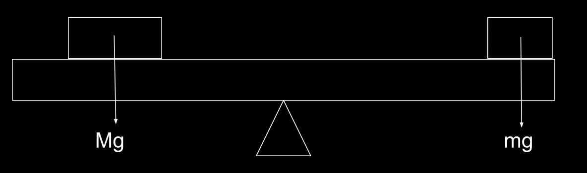
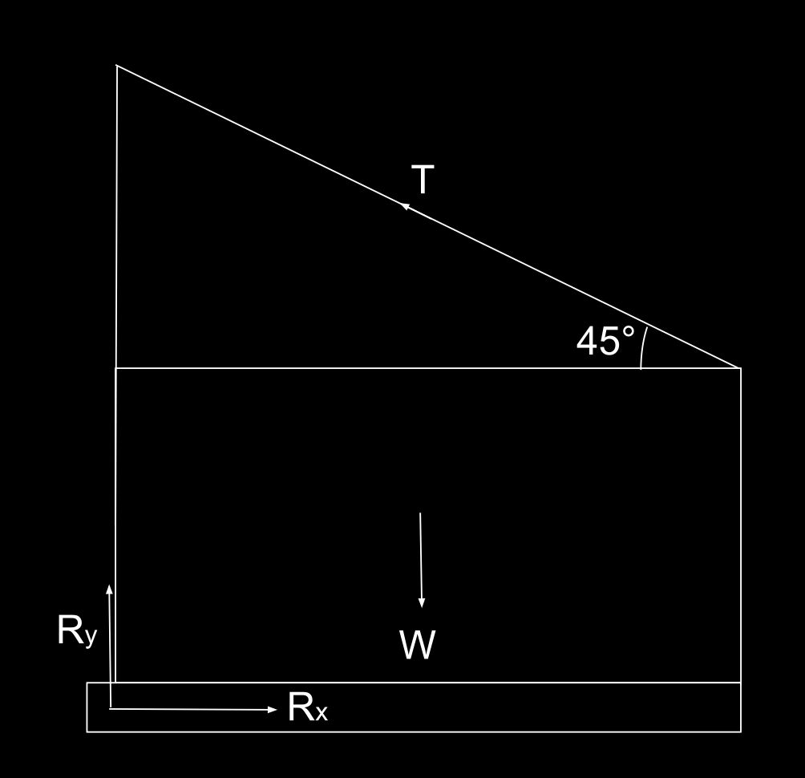
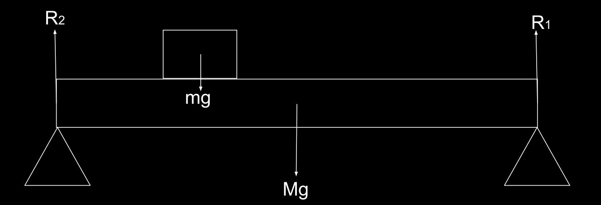
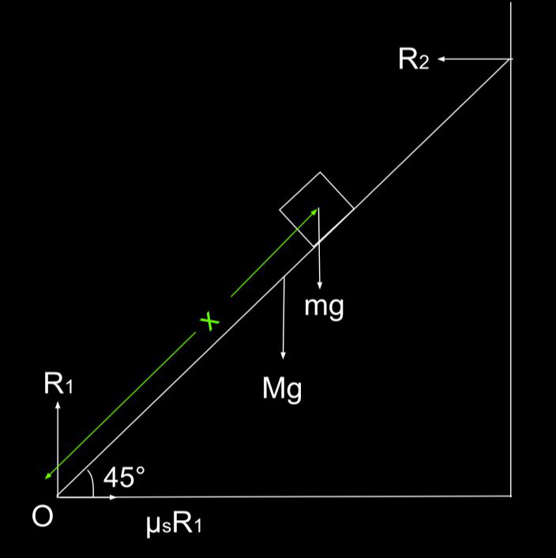

A 3 m long rod is pivoted at one end. A force of 10 N is applied perpendicular to the rod at the other end. Calculate the torque about the pivot.
\( \tau = Fd \,\sin\theta = 10\,\text{N} \times 3\,\text{m} \times \sin(90^\circ) = 30\, \text{Nm} \)
Torque (\( \tau \)) is the measure of the turning effect of a force about a pivot or axis. It determines how effectively a force causes an object to rotate.
The formula for torque is:
\[ \tau = Fd \sin(\theta) \]
Torque is a vector quantity and follows the right-hand rule for direction. It's measured in Newton-meters (N·m).
A 3 m long rod is pivoted at one end. A force of 10 N is applied perpendicular to the rod at the other end. Calculate the torque about the pivot.
\( \tau = Fd \,\sin\theta = 10\,\text{N} \times 3\,\text{m} \times \sin(90^\circ) = 30\, \text{Nm} \)
A 4 m beam (200 N) is supported at one end. A 300 N person stands 1.5 m from the support. Find the total torque.
\( \tau_{\text{beam}} = Fd\,\sin\theta = 200\,\text{N} \times 4\,\text{m} \times \sin(90^\circ) = 800 \, \text{Nm} \)
\( \tau_{\text{person}} = Fd\,\sin\theta = 300\,\text{N} \times 1.5\,\text{m} \times \sin(90^\circ) = 450 \, \text{Nm} \)
Total Torque: \( 1250 \, \text{Nm} \)
An object is in equilibrium when the total torque around any pivot is zero.
20 kg child at 1 m. How far should a 30 kg child sit on the other side?
Torque due to the 20 kg child, \(\tau = Fd = 20 \,\text{kg} \times 9.8\:\text{ms}^{-2} \times 1\,\text{m} = 196 \,\text{Nm} \)
Since the torque around the pivot is zero (according to laws of equilibrium) , the torque due to the 30 kg child should also be 196 Nm but in the opposite direction.
\(196\, \text{Nm} = Fd = 30 \,\text{kg} \times 9.8\,\text{ms}^{-2} \times d \)
\(d = 0.67 \:m\)
A signboard of weight 200 N is supported by a horizontal beam and a cable at an angle of 45°. Determine the force in the cable and the horizontal/vertical forces at the wall.
HINT : WHEN SOLVING TORQUE PROBLEMS, ALWAYS TRY TO DRAW A DIAGRAM INCLUDING ALL THE FORCES THAT YOU KNOW ABOUT
Now, try to write down all the torques and forces.
\(\uparrow \Sigma \text{Forces} = 0\)
\(\text{T} \sin 45^{\circ} + \text{R}_y - \text{W} = 0\) - Equation 1
\(\rightarrow \Sigma \text{Forces} = 0\)
\(\text{T} \cos 45^{\circ} - \text{R}_x = 0\) - Equation 2
\(\Sigma \text{Torque around the hinge} = 0\)
\(\text{T} \cos 45^{\circ} \times d - W \times \frac{d}{2} = 0\) - Equation 3
Solving equation 3 gives us,
\(\text{T} \cos 45^{\circ} = \frac{W}{2} = \frac{200\,N}{2} = 100\:N\)
\(\text{T} \approx 141.4\, N\)
Solving equation 2 gives us,
\(\text{T} \cos 45^{\circ} = \text{R}_x\)
\(\text{R}_x = 100\:N\)
Solving equation 1 gives us,
\(\text{R}_y = \text{W} - \text{T}\sin 45^{\circ}\)
\(\text{R}_y = 200\:\text{N} - 100\:\text{N} = 100\:\text{N}\)
A uniform 3 m long plank of wood with a mass of 20 kg is supported at both ends. A 10 kg box is placed 1 m from one end. Find the reaction forces at both supports. Assume g = 10ms\(^{-2}\)
Let's draw a diagram
Once again, let’s write all the forces and torques
\(\uparrow \Sigma \text{Forces} = 0\)
\(\text{R}_1 + \text{R}_2 - Mg - mg = 0\) - Equation 1
\(\Sigma \text{Torque around the left pivot} = 0\)
\(mg \times 1 + Mg \times 1.5 - R_1 \times 3 = 0\) - Equation 2
\(\Sigma \text{Torque around the right pivot} = 0\)
\(mg \times 2 + Mg \times 1.5 - R_2 \times 3 =0\) - Equation 3
Simplifying equation 1, we get:
\(R_1 + R_2 = Mg + mg = 300\:N\)
Simplyfying equation 2, we get:
\(3R_1 = mg + 1.5Mg = 400\:N\)
\(R_1 = 133.3\: N\)
Simplifying equation 3, we get:
\(3R_2 = 2mg + 1.5 Mg = 500N\)
\(R_2 = 166.7\:N\)
This matches equation 1 as well
A ladder 3 m long leans against a smooth wall at an angle of 45° with the ground. The ladder has a mass of 20 kg and a firefighter of 80 kg starts climbing. How far up the ladder can the firefighter climb before it starts tipping over? Friction coefficient between the ladder and the ground is 0.50. Assume g = 10ms\(^{-2}\).
Now, like in previous examples, let’s draw a diagram.
\(\uparrow \Sigma \text{Forces} = 0\)
\(R_1 - mg - Mg = 0\) - Equation 1
\(\rightarrow \Sigma \text{Forces} = 0\)
\(R_2 - \mu_sR_1 = 0\) - Equation 2
\(\Sigma \text{Torque around Point O}\)
\(mg \times x \times \cos45^{\circ} + Mg \times 1.5 \times \cos 45^{\circ} - R_2 \times 3 \times \sin 45^{\circ} = 0\) - Equation 3
Solving equation 1 gives us :
\(R_1 = mg + Mg = 1000\: N\)
Solving equation 2 gives us :
\(R_2 = \mu_sR_1 = 0.50 \times 1000\:N = 500\:N\)
Solving equation 3 gives us :
\(141.4 x = 1060.7 - 848.5 = 212.2\)
Maximum distance the person can walk up the ladder, \(x = \frac{212.2}{141.4} = 1.500\:m\)
Written by Thenura Dilruk